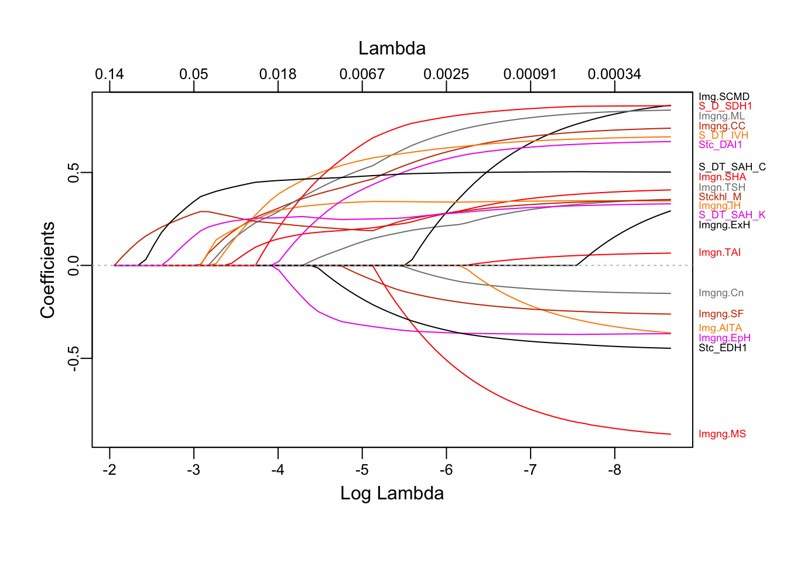
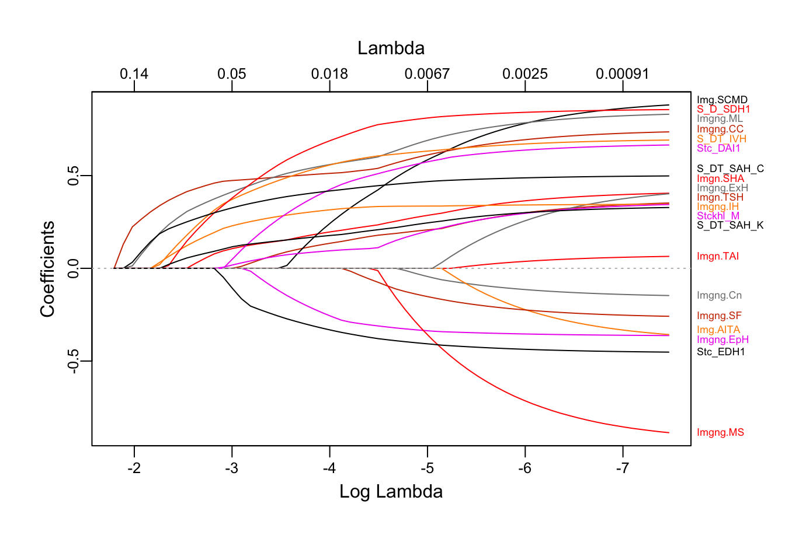
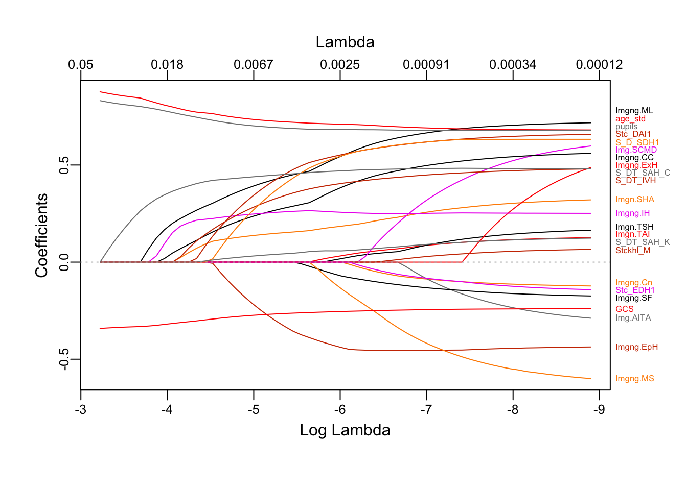
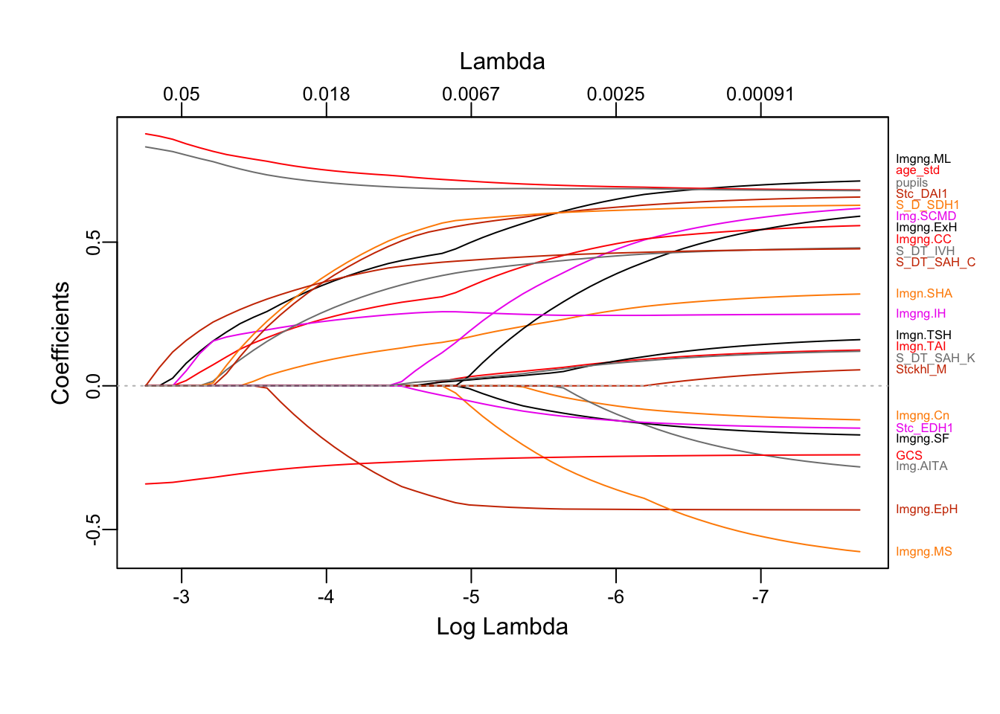

Code
library(reticulate)
library(tidyverse)
library(glmnet)
library(plotmo)
library(caret)library(reticulate)
library(tidyverse)
library(glmnet)
library(plotmo)
library(caret)# Load data
imputed_n = 5
unimputed_data_sets, imputed_data_sets, outcome_data = load_data_subsets()
# Define outcome (y)
y_GOSE = outcome_data["train_GOSE180_outcome"]
cutoff = 5
y = y_GOSE.apply(lambda x: 1 if x < cutoff else 0) #I.e. lower than cutoff = 1
# Define input (X) subsets to
X_IMPACT_core = imputed_data_sets["X_train_imputed_IMPACT_core"][imputed_n]
X_imaging_predictors = imputed_data_sets["X_train_imputed_imaging_predictors_no_scores"][imputed_n]
sthlm_score = imputed_data_sets["X_train_imputed_sthlm_score"][imputed_n]
helsinki_score = imputed_data_sets["X_train_imputed_helsinki_score"][imputed_n]
rotterdam_score = imputed_data_sets["X_train_imputed_rotterdam_score"][imputed_n]
marshall = imputed_data_sets["X_train_imputed_marshall_class"][imputed_n]
X_IMPACT_core_all_imaging_predictors = X_IMPACT_core.join(X_imaging_predictors)y <- data.frame(py$y)$py.y
x_impact_plus_imaging <- data.frame(py$X_IMPACT_core_all_imaging_predictors)
x_imaging <- data.frame(py$X_imaging_predictors)
sthlm_score <- py$sthlm_score
helsinki_score <- py$helsinki_score
rotterdam_score <- py$rotterdam_score
marshall <- py$marshallHere we will try to find out what variables lasso favours. Interestingly, the default setting of glmnet is to standardize all input columns. I.e., even binary columns will be standardized. I cannot understand why. Let’s compare the implications of this.
# Create the dummy matrix
x_imaging$Stockholm_Midline <- scale(x_imaging$Stockholm_Midline)
x_imaging_dummies <- model.matrix(~.-Stockholm_DT_SAH_Cistern-Stockholm_DT_SAH_Konvex, data = x_imaging)
# Preprocess Sthlm SAH columns to not destroy ordinal information
Stockholm_DT_SAH_Cistern_Ord <- as.double(x_imaging$Stockholm_DT_SAH_Cistern) - 1
Stockholm_DT_SAH_Konvex_Ord <- as.double(x_imaging$Stockholm_DT_SAH_Konvex) - 1
# Create a data frame with all preprocessed columns
extra_columns <- data.frame(
Stockholm_DT_SAH_Cistern_Ord = as.double(x_imaging$Stockholm_DT_SAH_Cistern) - 1,
Stockholm_DT_SAH_Konvex_Ord = as.double(x_imaging$Stockholm_DT_SAH_Konvex) - 1
)
x_imaging_dummies <- cbind(x_imaging_dummies, extra_columns)
fit_non_std <- glmnet(x=x_imaging_dummies, y=y, family='binomial', standardize=FALSE, alpha=1)
plot_glmnet(fit_non_std, label = TRUE, relax = TRUE)
The results here are pretty much identical with what we saw with sklearn in python or in Bayesian logistic regression with Laplacian priors in pymc: Midline shift (standardized), DT SAH cistern (non standardized), DT SAH convexity (non standardized), then intraventricular hemorrhage, cisternal compression etc.
fit_std <- glmnet(x=x_imaging_dummies, y=y, family='binomial', standardize=TRUE, alpha=1)
plot_glmnet(fit_std, label = TRUE, relax = TRUE)
Now cisternal compression comes first, followed by mass lesion and SAH in cisterns. SAH in convexities and especially midline shift (still standardized though) looses a lot of it’s importance.
I have no idea what to make of this. What does it mean to standardize a binary variable even?
Here the IMPACT core predictors will be added, but they will not be regularized.
# Create the dummy matrix
X_IMPACT_core <- py$X_IMPACT_core
x_imaging_dummies$age_std <- scale(X_IMPACT_core$age)
x_imaging_dummies$pupils <- sapply(X_IMPACT_core$pupils, as.numeric) - 1
x_imaging_dummies$GCS <- sapply(X_IMPACT_core$GCSm, as.numeric)
p.fac <- rep(1, 24)
p.fac[c(22, 23, 24)] <- 0
fit_with_impact <- glmnet(x=x_imaging_dummies, y=y, family='binomial', standardize=FALSE, alpha=1, penalty.factor = p.fac)
plot_glmnet(fit_with_impact, label = TRUE)
Here the three first variables are: SAH cistern, mass lesion, intraventricular hemorr. Midline shift dissapears completely.
Again, if we let glmnet standardize inputs…
fit_with_impact_std <- glmnet(x=x_imaging_dummies, y=y, family='binomial', standardize=TRUE, alpha=1, penalty.factor = p.fac)
plot_glmnet(fit_with_impact_std, label = TRUE)
Now it’s SAH cistern, mass lesion, intraventricular hemorrhage/cisternal compression (tied sort of). Here standardization did not change stuff as much. Again though, midline shift is not involved here at all!
Let’s compare the performance of logistic regression models with the variables “choosen” by LASSO. (Similar to a relaxed LASSO approach.) Unfortunately, caret does not return a glm object after CV training, making calucation of R^2 a bit more painful. I’ll do it “later”.
Here, models will be trained using different subsets of data:
Impact core predictors only
Midline shift (mm), SAH cistern, SAH convex. Based on the fact that these were the “best” variables in LASSO regression when only using CT variables
Impact core + the above 3 predictors
Impact core + Mass lesion present, SAH cistern, IVH, i.e. the best 3 CT variables as per the LASSO regression with impact variables + CT variables
Impact core + 3 arbitrary CT variables
Impact core + all CT variables
All CT variables
A set of scoring systems
impact_only <- x_imaging_dummies %>% select("age_std", "pupils", "GCS")
stockholm_imaging <- x_imaging_dummies %>% select("Stockholm_Midline", "Stockholm_DT_SAH_Cistern_Ord", "Stockholm_DT_SAH_Konvex_Ord")
impact_plus_stockholm_imaging <- x_imaging_dummies %>% select("age_std", "pupils", "GCS", "Stockholm_Midline", "Stockholm_DT_SAH_Cistern_Ord", "Stockholm_DT_SAH_Konvex_Ord")
impact_plus_best_imaging <- x_imaging_dummies %>% select("age_std", "pupils", "GCS", 'Imaging.MassLesionpresent', 'Stockholm_DT_SAH_Cistern_Ord', 'Imaging.IntraventricularHemorrhagepresent')
impact_plus_random_imaging <- x_imaging_dummies %>% select("age_std", "pupils", "GCS", 'Stockholm_Dual_SDH1', 'Stockholm_DAI1', 'Imaging.SkullFracturepresent')
all_imaging <- x_imaging_dummies %>% select(-age_std, -pupils, -GCS)
impact_plus_sthlm <- x_imaging_dummies %>% select("age_std", "pupils", "GCS")
impact_plus_sthlm$score <- sthlm_score$Stockholm_total
# Define datasets and their names
datasets <- list("Impact core only" = impact_only,
"SAH cistern, SAH convex, midline shift" = stockholm_imaging,
"Impact core + SAH cistern, SAH convex, midline shift" = impact_plus_stockholm_imaging,
"Impact core + Mass lesion, SAH cistern, IVH" = impact_plus_best_imaging,
"Impact core + Dual SDH, DAI, Skull frx (Just 3 arbitrary predictors)" = impact_plus_random_imaging,
"Impact core + all imaging vars" = x_imaging_dummies,
"All imaging vars only" = all_imaging,
"Impact core + Sthlm score" = impact_plus_sthlm,
"Sthlm score only" = sthlm_score,
"Helsinki score only" = helsinki_score,
"Rotterdam score only" = rotterdam_score)
dataset_names <- names(datasets)
# Initialize an empty dataframe to store results
results <- data.frame(dataset = character(),
AUROC = numeric(),
stringsAsFactors = FALSE)
# Loop through each dataset
for (i in seq_along(datasets)) {
# For whatever bizarre reason caret needs to be babied and have the y transformed to a factor vector that cannot contain levels 0,1...
y_factor <- factor(y, labels = c("foo", "bar"))
# Define fit control
fit.control <- trainControl(method = "repeatedcv", number = 5, repeats = 10,
summaryFunction = twoClassSummary, classProbs = TRUE)
# Train the model
fit <- train(x = datasets[[i]], y = y_factor, method = "glm",
family = "binomial", trControl = fit.control)
# Get AUROC score
auroc <- round(fit$results$ROC, 3)
sens <- round(fit$results$Sens, 3)
spec <- round(fit$results$Spec, 3)
# Store results in dataframe
results <- rbind(results, data.frame(dataset = dataset_names[i], AUROC = auroc, Sensitivity = sens, Specificity = spec))
}
# Print the results dataframe
results| dataset | AUROC | Sensitivity | Specificity |
|---|---|---|---|
| Impact core only | 0.805 | 0.835 | 0.605 |
| SAH cistern, SAH convex, midline shift | 0.716 | 0.863 | 0.453 |
| Impact core + SAH cistern, SAH convex, midline shift | 0.817 | 0.841 | 0.611 |
| Impact core + Mass lesion, SAH cistern, IVH | 0.829 | 0.828 | 0.637 |
| Impact core + Dual SDH, DAI, Skull frx (Just 3 arbitrary predictors) | 0.814 | 0.842 | 0.620 |
| Impact core + all imaging vars | 0.831 | 0.834 | 0.655 |
| All imaging vars only | 0.783 | 0.816 | 0.611 |
| Impact core + Sthlm score | 0.832 | 0.841 | 0.647 |
| Sthlm score only | 0.762 | 0.833 | 0.568 |
| Helsinki score only | 0.744 | 0.850 | 0.482 |
| Rotterdam score only | 0.706 | 0.814 | 0.516 |
With the reservation that R^2 and calibration has not been checked here. It still seems as if adding a few CT findings has little impact on AUROC in addition to impact core variables. It seems almost as if just piling on more or less arbitrary CT findings has a small positive effect on performance. Interestingly, SAH in cisterns shows up in most tests.